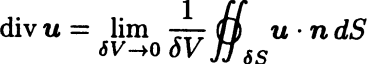
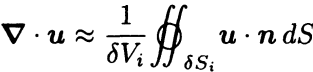

Let \( \mathbf{u} \) be a continuously differentiable vector field, defined in a volume \( V \).
Let \( S \) be the closed surface forming the boundary of \( V \) and let \( \mathbf{n} \) be the unit outward normal to \( S \). Then the Gauss’ theorem (divergence theorem) states that

Roughly speaking, the divergence theorem states that the total amount of expansion of \( \mathbf{u} \) within the volume \( V \) is equal to the flux of \( \mathbf{u} \) out of the surface \( S \)
Proof
The volume \( V \) is divided into a large number of small subvolumes \( \delta V_i \) with surfaces \( \delta S_i \).
The proof of the divergence theorem then follows naturally from the physical definition of
the divergence in terms of a surface integral 
Within each of the subvolumes, \( \nabla \cdot \mathbf{u} \) is defined by  where the approximation becomes exact in the limit \( \delta V_i \to 0 \)
Now multiply both sides of by \( \delta V_i \) and add the contributions
from all the subvolumes: 
1P. C. Matthews, Vector Calculus, New York:Springer-Verlag, 1998.